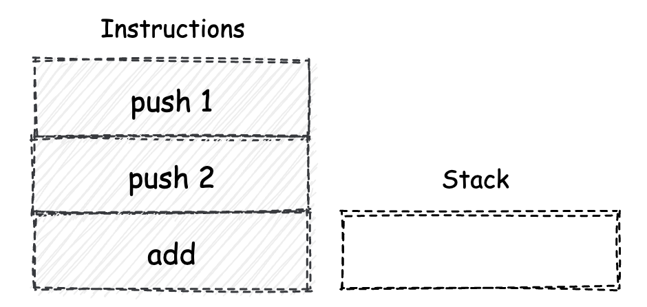
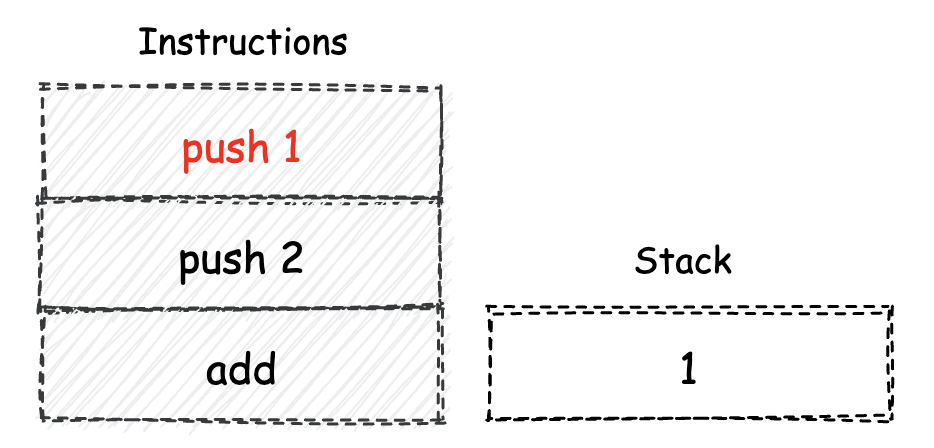
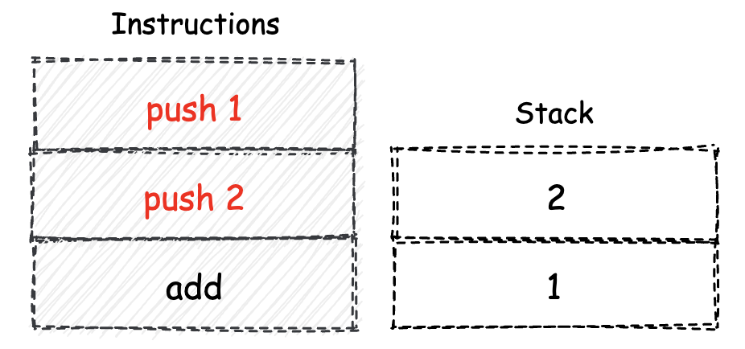
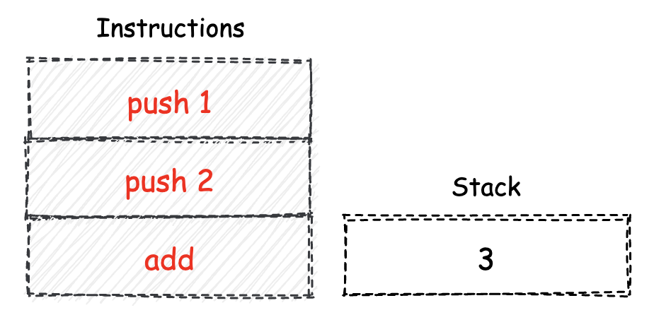
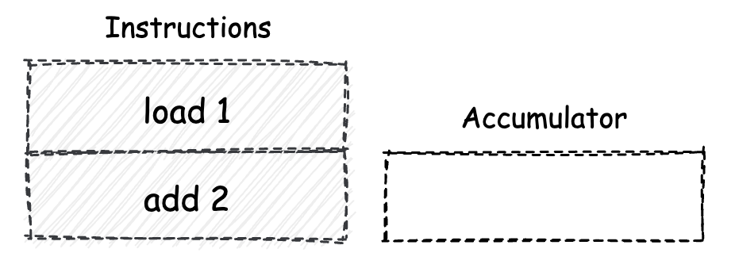
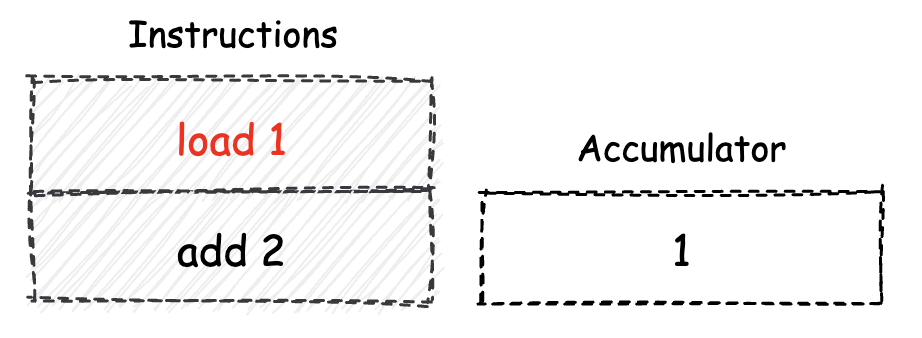
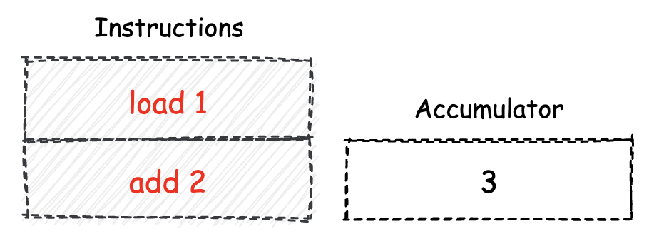
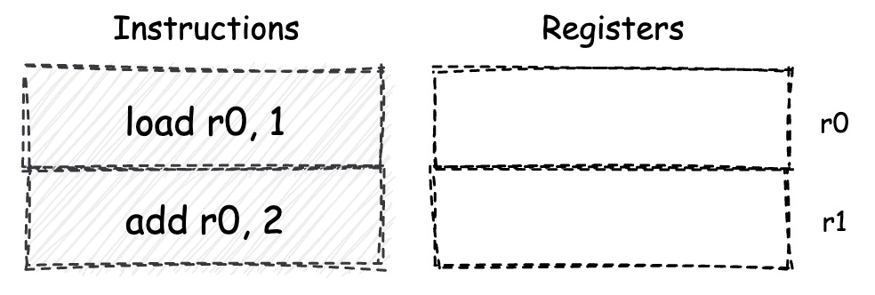
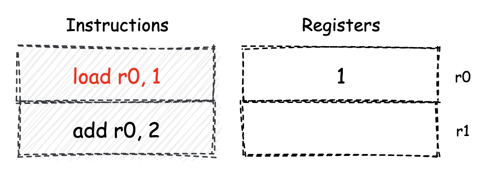
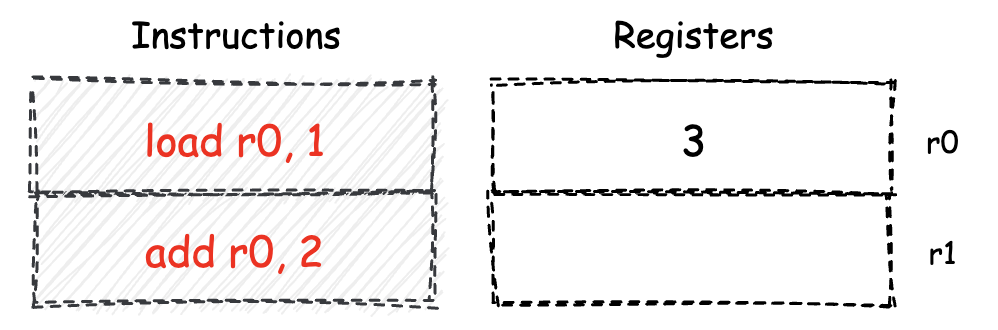

- 00 开篇词 我们为什么要了解 WebAssembly？.md.html
- 01 基础篇：学习此课程你需要了解哪些基础知识？.md.html
- 02 历史篇：为什么会有 WebAssembly 这样一门技术？.md.html
- 03 WebAssembly 是一门新的编程语言吗？.md.html
- 04 WebAssembly 模块的基本组成结构到底有多简单？.md.html
- 05 二进制编码：WebAssembly 微观世界的基本数据规则是什么？.md.html
- 06 WAT：如何让一个 WebAssembly 二进制模块的内容易于解读？.md.html
- 07 WASI：你听说过 WebAssembly 操作系统接口吗？.md.html
- 08 API：在 WebAssembly MVP 标准下你能做到哪些事？.md.html
- 09 WebAssembly 能够为 Web 前端框架赋能吗？.md.html
- 10 有哪些已经投入生产的 WebAssembly 真实案例？.md.html
- 11 WebAssembly 在物联网、多媒体与云技术方面有哪些创新实践？.md.html
- 12 有哪些优秀的 WebAssembly 编译器与运行时？.md.html
- 13 LLVM：如何将自定义的语言编译到 WebAssembly？.md.html
- 14 有哪些正在行进中的 WebAssembly Post-MVP 提案？.md.html
- 15 如何实现一个 WebAssembly 在线多媒体处理应用（一）？.md.html
- 16 如何实现一个 WebAssembly 在线多媒体处理应用（二）？.md.html
- 17 如何实现一个 WebAssembly 在线多媒体处理应用（三）？.md.html
- 18 如何进行 Wasm 应用的调试与分析？.md.html
- 19 如何应用 WASI 及其相关生态？.md.html
- 20 总结与答疑.md.html
- 结束语 WebAssembly，未来已来.md.html
- 捐赠
03 WebAssembly 是一门新的编程语言吗？
你好，我是于航。
“WebAssembly（缩写为 Wasm）是一种基于堆栈式虚拟机的二进制指令集。Wasm 被设计成为一种编程语言的可移植编译目标，并且可以通过将其部署在 Web 平台上，以便为客户端及服务端应用程序提供服务”。这是 Wasm 官网给出的一段，对 “Wasm 是什么？” 这个问题的解答。
其实，在开设这门课程之前，我曾在国内的各类博客和资讯网站上查阅过很多有关 Wasm 的相关资料。发现大多数文章都会声称 “Wasm 是一种新型的编程语言”。但事实真的是这样的吗？希望本篇文章的内容，能够给你心中的这个问题一个更加明确的答案。要想了解 Wasm 究竟是什么，我们还要先从“堆栈机模型”开始说起。
堆栈机模型
堆栈机，全称为“堆栈结构机器”，即英文的 “Stack Machine”。堆栈机本身是一种常见的计算模型。换句话说，基于堆栈机模型实现的计算机，无论是虚拟机还是实体计算机，都会使用“栈”这种结构来实现数据的存储和交换过程。栈是一种“后进先出（LIFO）”的数据结构，即最后被放入栈容器中的数据可以被最先取出。
接下来，我们将尝试模拟堆栈机的实际运行流程。在这个过程中，我们会使用到一些简单的指令，比如 “push”，“pop” 与 “add” 等等。这里你可以把它们想象成一种汇编指令。
大多数指令在执行时，都会从堆栈机的栈容器中取出若干个所需的操作数，然后根据指令所对应的功能，堆栈机会对取出的操作数进行一定的运算和处理。当这个过程结束后，若指令有需要返回的计算结果，这个值会被重新压入到栈容器中。
假设此时我们需要计算表达式 “1 + 2” 的值，那么通过栈机，这句表达式会以怎样的方式来执行呢？我们前面提到过，堆栈机中的栈容器，主要是作为程序执行时的数据存储和交换场所。那么对于上述表达式，编译器在实际进行编译时，假设在没有使用任何优化策略的情况下，通常会生成类似如下的这样几条指令。

如上图所示，这里我们将编译器生成的指令集合，按照指令从上到下的执行顺序放在左侧。堆栈机中栈容器的当前状态放置在右侧。可以看到，此时的栈容器为空，内部没有任何数据。下面，堆栈机开始执行第一条指令 “push 1”。push 指令会将紧随其后出现的操作数直接压入栈中。当该指令执行完毕后，此时栈容器的状态如下图所示。

我们将已经执行完毕的指令用红色进行标记。此时，栈容器的栈底存放着通过第一条 push 指令压入的操作数 “1”。以同样的方式，堆栈机继续执行第二条指令 “push 2”。该条指令执行完毕后，栈容器的状态如下图所示。

可以看到，目前栈容器中存放有通过前两条 push 指令压入的操作数 “1” 和 “2”。接下来，堆栈机继续执行第三条 “add” 指令。
执行这条指令需要两个操作数，因此在执行指令时，堆栈机会首先检查当前的栈容器，看其中存放的元素数量是否满足“大于或等于 2 个”。如果这个条件成立，堆栈机会直接从栈容器的顶部取出两个操作数，然后将它们直接相加，所得到的结果会被再次压入到栈容器中。当最后一条 add 指令执行完毕后，此时栈容器的状态如下图所示。

当全部指令执行完毕后，在栈容器中，会存放有表达式 “1 + 2” 在经过堆栈机求值后的结果值。
寄存器机与累加器机
刚刚我们通过一个简单的例子，来大致了解了堆栈机模型是什么，以及堆栈机中栈容器与指令间的交互关系。但实际上，除了堆栈机模型以外，还有另外两种曾经使用过，或现在也仍然在广泛使用的计算模型，即“寄存器机”与“累加器机”模型。
累加器机
顾名思义，累加器机是使用“累加器”，来作为指令操作数的交换场所。累加器机实际上是一种较为古老的计算模型，它仅能够使用可存放单一值的累加器寄存器（后简称“累加器”）单元，来作为指令操作数的暂存场所。因此，基于累加器机模型设计的指令一般都仅支持一个操作数。
不仅如此，由于累加器的存储容量有限，因此对于一些需要进行暂存的中间数据，通常都只能够被存放到机器的线性内存中。又由于访问线性内存的速度，一般远远低于访问寄存器的速度，因此从某种程度上来讲，累加器机的指令整体执行效率会相对较低。
比如，对同样的表达式 “1 + 2” 进行求值，在累加器机中，对应的指令和执行情况，可以大致用如下图示来进行概括。

初始状态时，累加器中没有任何数据。接下来，指令按照类似从上到下的顺序开始执行。第一条指令 “load” 会将其后面跟随的立即数（根据指令设计不同，后面也可能会跟随一个线性内存的地址）放到累加器中。当该条指令执行完毕后，累加器机的整体状态如下图所示。

此时，累加器中保存的数值为 1。继续，机器执行第二条指令 “add 2”。该条指令会将其后面跟随的立即数，累加到机器的累加器单元中。当最后一条指令执行完毕后，累加器机的终态将如下图所示。此时，累加器中便存放着表达式 “1 + 2” 的计算终值 “3”。

以上呢，便是累加器机模型下的指令设计特征，以及机器的整体运作模式。
寄存器机
另一种常用的计算模型被称为“寄存器机”。顾名思义，基于这种计算模型的机器，将使用特定的CPU 寄存器组，来作为指令执行过程中数据的存储和交换容器。
在寄存器机中，由于每一条参与到数据交换和处理的指令，都需要显式地标记操作数所在的寄存器（比如通过别名的方式），因此相较于堆栈机和累加器机，寄存器机模型下的指令相对更长。但相对地，数据的交换过程也变得更加灵活。
还是拿对表达式 “1 + 2” 进行求值这个例子，我们来看一看寄存器机在执行这句表达式时的具体流程。
如下图所示，假设在这个机器的 CPU 中，有 ”r0“ 与 ”r1“ 两个通用寄存器。在初始情况下，这两个寄存器中没有存放任何内容。

第一条指令 ”load r0, 1“。load 指令将接受两个操作数。第一个为目标寄存器的别名，第二个为一个立即数。当指令执行时，作为第二个操作数的立即数，将会被存放到由第一个操作数指定的寄存器中。该指令执行完毕时，对应的寄存器机整体状态如下图所示。此时，寄存器 r0 中存放有数值 1，而寄存器 r1 中没有存放任何内容。

接下来第二条指令。与第一条指令类似，我相信你已经能够猜测出它的作用。这条 “add” 指令会将作为第二个操作数的立即数累加到，由第一个操作数所指定的寄存器中。当指令全部执行完毕后，对应的寄存器机终态将如下图所示。此时，寄存器 r0 中存放有表达式 “1 + 2” 的计算终值 “3”，而寄存器 r1 中仍然没有存放任何内容。

在上述整个指令的执行流程中，我们全程都没有使用到寄存器 r1，这也是寄存器机的一个优点。对于某些复杂的计算流程，寄存器机可以对执行流程进行优化。而优化策略的实施便得益于其拥有的众多数据暂存容器，也就是寄存器。
三种计算模型的比较
总的来看，包括“堆栈机”、“累加器机”以及“寄存器机”在内的三种计算模型，它们都拥有其各自的特点与使用场景。
堆栈机使用栈结构作为数据的存储与交换容器，由于其“后进先出”的特性，使得我们无法直接对位于栈底的数据进行操作。因此在某些情况下，机器会使用额外的指令来进行栈数据的交换过程，从而损失了一定的执行效率。但另一方面，堆栈机模型最为简单且易于实现，对应生成的指令代码长短大小适中。
累加器机由于其内部只有一个累加器寄存器可用于暂存数据，因此在指令的执行过程中，可能会频繁请求机器的线性内存，从而导致一定的性能损耗。但另一方面，由于累加器模型下的指令最多只能有一个操作数，因此对应的指令较为精简。
寄存器机内大多数与数据操作相关的指令，都需要在执行时指定目标寄存器，这无疑增加了指令的长度。过于灵活的数据操作，也意味着寄存器的分配和使用规则变得复杂。但相对的，众多的数据暂存容器，给予了寄存器机更大的优化空间。因此，通常对于同样的一段计算逻辑，基于寄存器机模型，可以生成更为高效的指令执行结构。
ISA 与 V-ISA
我们前面介绍了三种不同的计算模型，总体来看你会发现，对应于每一种计算模型的指令，都有着不同的基本结构。比如指令可以接受的操作数个数、可操作数据所存放的位置，以及指令与指令之间交互方式的细微差别等等。
通常来说，对于可以应用在诸如 i386、X86-64 等实际存在的物理系统架构上的指令集，我们一般称之为 ISA（Instruction Set Architecture，指令集架构）。而对另外一种使用在虚拟架构体系中的指令集，我们通常称之为 V-ISA，也就是 Virtual（虚拟）的 ISA。
对这些 V-ISA 的设计，大多都是基于堆栈机模型进行的。而 Wasm 就是这样的一种 V-ISA。
Wasm 之所以会选择堆栈机模型来进行指令的设计，其主要原因是由于堆栈机本身的设计与实现较为简单。快速的原型实现可以为 Wasm 的未来发展预先试错。
另一个重要原因是，借助于堆栈机模型的栈容器特征，可以使得 Wasm 模块的指令代码验证过程变得更加简单。
简单的实现易于 Wasm 引擎与浏览器的集成。基于堆栈机的结构化控制流，通过对 Wasm 指令进行 SSA（Static Single Assignment Form，静态单赋值形式）变换，可以保证即使是在堆栈机模型下，Wasm 代码也能够有着较好的执行性能。而堆栈机模型本身长短适中的指令长度，确保了 Wasm 二进制模块能够在相同体积下，拥有着更高密度的指令代码。
Wasm 虚拟指令集
到这里，我们已经知道了 Wasm 是一种基于堆栈机模型设计的 V-ISA 指令集。那下面就让我们来一起看看它的真实面目。如下所示，是一段标准的 Wasm 指令。这段指令的功能与我们之前在介绍三种计算模型时所使用的例子一样。
i32.const 1
i32.const 2
i32.add
前两条指令使用了 “i32.const”，这个指令会将紧随其后的立即数作为一个 i32 类型，也就是 32 位整数类型的值，压入到堆栈机的栈容器中。
最后一条指令 “i32.add”，会取出位于栈容器顶部的两个 i32 类型的值，并相加，然后再将计算结果重新放回到栈容器中。同样的，堆栈机在实际执行这条指令前，也会首先检查当前的栈容器顶部是否含有至少两个 i32 类型的值。
可以看到，上述这段 Wasm 指令的执行方式，与我们在介绍堆栈机模型时，所采用的那个案例中的指令执行流程完全一样。相信此时的你，一定会对本文开头 “Wasm 是什么？” 这个问题的答案有了新的认识。
另外要提到的是，类比汇编语言与机器码。这里我们看到的诸如 “i32.const” 与 “i32.add” ，其实都是 Wasm 这个 V-ISA 指令集中，各个指令所对应的文本助记符（mnemonic）。实际当这些助记符被编译到 Wasm 二进制模块中时，会使用助记符所对应的二进制字节码（一般被称为 OpCode，你可以简单地将其理解为一些二进制数字），并配合一些编码算法来压缩整个二进制模块文件的体积。
最后一点需要你知道的是，Wasm 虽然有着类似汇编语言的这种“助记符”形式，但在大多数情况下，它仅被作为诸如 C/C++ 等高级编程语言的最终编译目标。编译器会自动处理从这些高级语言源代码到 Wasm 二进制指令的转换过程。而这也正如我们在开头所提到的那样，官方声称的 ”Wasm 被设计成为一种编程语言的可移植编译目标“。
总结
好了，讲到这，今天的内容也就基本结束了。最后我来给你总结一下。
本文开篇我们介绍了三种常见的计算模型，分别是“堆栈机模型”、“累加器机模型”以及“寄存器机模型”。我们把在这三种不同计算模型下，对表达式 “1 + 2” 进行求值时，所使用的对应不同类型的指令与数据存储方式，进行了对比。
接下来我们讲解了 ISA 与 V-ISA 的区别，即：前者一般指应用在实际物理架构上的指令集，而后者通常指应用于虚拟架构体系的指令集。 Wasm 便是一种基于堆栈机设计的 V-ISA 指令集。包括 Wasm 在内的 ISA 与 V-ISA 指令集，它们都有着指令集所相对应的助记符形式，以及实际用于物理机器，或虚拟机执行的对应二进制字节码形式。
最后，我们再回到本文的题目。那么你觉得 WebAssembly 是一门新的编程语言吗？对我来说，它不是一门编程语言。因为它完全不同于我们常见的高级程序设计语言，我们通常仅将其用作编译器的一种新的编译目标。但它又可以是一门“编程语言”，因为我们可以通过助记符的形式来直接进行 Wasm 指令集程序的编写。相较于汇编语言来讲，你也可以将 Wasm 看作是一门低级的编程语言。那么对你来说，答案是什么呢？
课后练习
最后，我们来做一个练习题吧。
结合我们之前介绍的堆栈机指令的执行规则和流程，你来猜一猜当下面这段 Wasm 指令执行完毕时，堆栈机的栈容器中会剩余几个值？它们的值分别是多少呢？
关于这些指令的具体执行规则，你可以在这里进行查找。
i32.const 1
i32.const 1
i32.eq
i32.const 10
i32.const 10
i32.add
i32.mul
今天的课程就结束了，希望可以帮助到你，也希望你在下方的留言区和我参与讨论，同时欢迎你把这节课分享给你的朋友或者同事，一起交流一下。
© 2019 - 2023 Liangliang Lee. Powered by gin and hexo-theme-book.